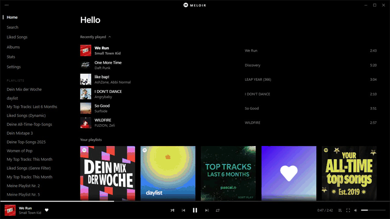
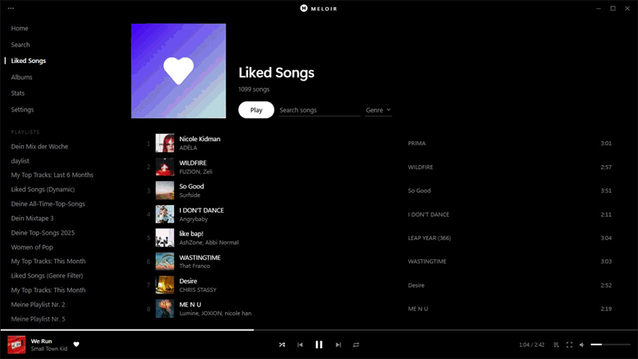
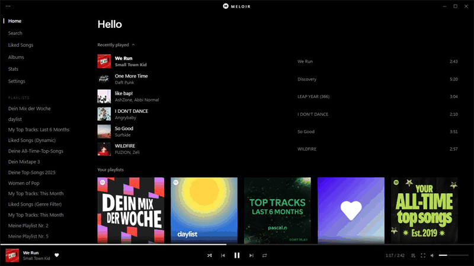

Meloir
A pure black interface for Spotify on Windows.
The only colour on screen comes from the covers.
Works on a free account. Needs the Spotify desktop app from spotify.com.
Just the cover and the song.
The cover on a black screen with a soft glow from its colours. Lyrics follow the song word by word where timing is available. The cover leans toward the mouse, and the line at the bottom pulses on beats and flashes on drops.
Drag it into place.
Slide the queue in with Q and drag songs into a new order. When the next song starts, the list moves up with it.
Find it as you type.
Search any playlist or Liked Songs as you type, filter by genre, and right-click a song to queue it, like it, add it to a playlist or start a radio from it.

Yours, on your PC.
See how long you have listened, with your top songs and artists. It all stays on your PC. The recording uses sample numbers.

Dark or white.
Everything sits in one sorted page, with Dark and White themes. Try them at the top of this page.

- Mix an artist's hits and deep cuts with similar artists
- Song radio Spotify's radio for any song
- Albums saved, plus the ones you've liked most
- Smooth transitions on a free account too
- Idle screen the cover fills the window
- Recently played and recent searches
- Equalizer cursor glow and pause fades
- Updates installed in one click
Press them here.
Three steps.
- Install the Spotify desktop app from spotify.com. The Microsoft Store version is not supported.
- Download and run MeloirSetup.exe. If SmartScreen warns you, choose More info, then Run anyway, because the installer is not code-signed. No admin rights are needed.
- Open Meloir from the Start menu.
Meloir restarts Spotify when it opens, so anything playing stops for a moment. To remove it, run the installer again and choose Uninstall. Spotify is not touched.
The honest part.
Ads and your account. Meloir switches off the app's ad managers and mutes anything that still plays as an ad. It never reports the account as Premium. Blocking ads goes against Spotify's Terms of Use, and Spotify may suspend accounts that do it. Use it at your own risk.
Lyrics and genres. Word timing comes from LyricsPlus and lrc.red, which receive the song's title, artist and length. The genre menu asks Wikidata and Apple's iTunes catalogue about artists.
Your data. Recent songs, searches, stats and genres stay on your PC and can be cleared in Settings. When Meloir opens it asks GitHub for the latest release.
Debug port. While Meloir runs, Spotify's debugging port is open on this PC only, on a random port. Other programs on this PC could reach your Spotify session through it.